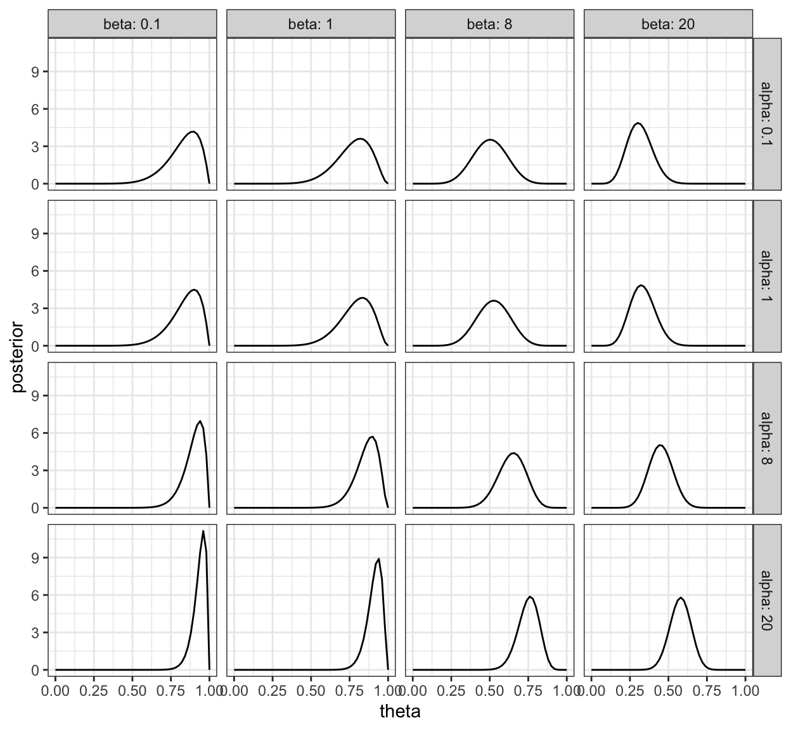

“[Bayes’ theorem] is to the theory of probability what the Pythagorean theorem is to geometry.”
— Sir Harold Jeffreys’)1
Recap: Bayesian statistics
Conditional probability
If \(S\) and \(T\) are events then recall that the joint probability can be written as \[ \begin{aligned} Pr(S,T) &= Pr(S~\vert~T)Pr(T) \text{ or} \\ Pr(S,T) &= Pr(T~\vert~S)Pr(S) \end{aligned} \] If \(S\) and \(T\) are independent then \(P(S~\vert~T) = P(S)\) and \(P(T~\vert~S)\) so \[ Pr(S,T) = Pr(S)Pr(T) \] Also related, is the rule for conditional probability \[ Pr(S~\vert~T) = \frac{Pr(S,T)}{Pr(T)} \] These rules apply to discrete probabilities, but also when using probability distribution functions for continuous probability distributions. For example if \(p(\cdot)\) represents a pdf then \[ \begin{aligned} p(x~\vert~y) & = \frac{p(x,y)}{p(y)} &= \frac{p(y~\vert~x)p(x)}{p(y)} \text{ where} \\ p(y) &= \int_{\mathcal{X}} p(x,y)~dx &= \int_{\mathcal{X}} p(y~\vert~x)p(x)~dx \end{aligned} \] where \(\mathcal{X}\) is the support of \(x\).
Bayes Theorem2
If \(A\) and \(B\) are events, and \(Pr(B)\neq 0\), then \[ Pr(A~\vert~B) = \frac{Pr(B~\vert~A)Pr(A)}{Pr(B)} \] When applied to statistical inference, Bayes theorem can be understood as \[ Pr(\text{parameters} ~\vert~ \text{data}) \propto f(\text{data} ~\vert~ \text{parameters}) \times \pi(\text{parameters}) \] where
- \(\pi(\text{parameters}) = \pi(\theta)\) is the prior distribution. The information we have about the parameter of interest before observing the data.
- \(f(\text{data} ~\vert~ \text{parameters}) = f(\boldsymbol{x} ~\vert~ \theta)\) is the likelihood or probability distribution for observing the data. This defines the way we assume the data is generated, if we were given the exact value of the parameters.
- \(Pr(\text{parameters} ~\vert~ \text{data}) = Pr(\theta ~\vert~ \boldsymbol{x})\) is the posterior distribution. Defines our new updated information (beliefs, uncertainty etc.) about the parameters of interest, after observing the data.
The only thing missing is the normalising constant: \[ Pr(\text{data}) = Pr(\boldsymbol{x}) = \int_{\theta} f(\boldsymbol{x} ~\vert~ \theta) \pi(\theta) \text{ d}\theta \] To recap, Bayes theorem gives us a method for statistical inference through the posterior: \[ Pr(\theta ~\vert~ \boldsymbol{x}) =\frac{f(\boldsymbol{x} ~\vert~ \theta) \pi(\theta)}{Pr(\boldsymbol{x})} \]
Jeffery’s prior
Jeffery’s prior are motivated by wanting priors that are uninformative, in the sense that the prior has little effect on the statistical inference being performed. In otherwords, the data informs the posterior distribution as much as possible. This can be a desirable property in some analysese but is not always wanted. For example, shrinkage priors are known to be helpful in high dimensional parameter settings.
The Jeffery’s prior is given by \[ \pi(\boldsymbol{\theta}) \propto \sqrt{\det \left[ \mathcal{I}(\boldsymbol{\theta}) \right]} \] where \(\mathcal{I}(\boldsymbol{\theta})\) is the Fisher information matrix (or value).
Theory questions
Question 1
Suppose \(A\), \(B\), \(C\) are three events. Which of the following are always true, and which are special relations following from assumptions. State the assumption(s) (if any) required to make the statement true.
- \(p(A,B,C) = p(A)p(B|A)p(C|B)\)
- \(p(A,B,C) = p(A)p(B|A)p(C|A,B)\)
- \(p(A|B,C) = \frac{p(B,C|A)p(A)}{p(B,C)}\)
- \(p(A|B,C) = \frac{p(B|A)p(C|A)p(A)}{p(B)p(C)}\)
Solution:
The probability \(p(A,B,C)\) can be written as \(p(A,B,C) = p(C|A,B)p(A,B) =p(C|A,B)p(B|A)p(A)\). Hence \(p(A,B,C)=p(C|B)p(B|A)p(A)\) is true only if \(p(C|A,B)=p(C|B)\). In other words, \(A\) and \(C\) are independent.
From above, it is always true that \(p(A,B,C) = p(C|A,B)p(B|A)p(A)\).
Note we can write \[ \begin{aligned} p(A,B,C) &= p(A|B,C)p(B,C), \qquad \text{and}\\ p(A,B,C) &= p(B,C|A)p(A). \end{aligned} \] Combining the two, we get \(p(A|B,C)p(B,C)=p(B,C|A)p(A)\) and hence \(p(A|B,C) = \frac{p(B,C|A)p(A)}{p(B,C)}\) is always true.
From above, for \(p(A|B,C) = \frac{p(B|A)p(C|A)p(A)}{p(B)p(C)}\) to be true, we require \(p(B,C|A)=p(B|A)p(C|A)\) and \(p(B,C)=p(B)p(C)\), i.e. \(B\) and \(C\) are independent.
Question 2
In Bayesian statistics we often work with density functions up to a constant of proportionality. For example, \(p(x,y) \propto xy\) implies that \(p(x,y) = Cxy\) where \(C\) is a constant such that \(p(x,y)\) integrates to 1 over the joint support.
Let \(p(x,y) \propto 1\), \(0 < y < x <1\), this defines uniform probability over a triangle3. Find \(p(x|y)\) and \(p(y|x)\). Are \(x\) and \(y\) independent?
Suppose we define the joint probability density by \[p(x,y) \propto \frac{1}{(x+y)^2}, \quad x>0, \, y>0.\] Find \(p(x)\), \(p(y)\), \(p(x|y)\). Is there anything unusual about \(p(x)\), etc?
Suppose \(x\) is discrete and \(y\) is continuous with \[p(x,y) \propto \frac{1}{x}, \quad x=1,2; \, 0<y<x.\] Find \(p(x)\) and \(p(y)\), \(p(x|y)\) and \(p(y|x)\) properly normalized.
- Put \(p(x,y)=k,0<y<x<1.\) Then \(p(y) = \int_{x=y}^1 k ~ dx = k(1-y).\) So \(p(x|y)=p(x,y)/p(y) = 1/(1-y).\) i.e. \(x|y \sim \text{Uniform}(y,1).\) Similarly, \(p(x)=\int_{y=0}^x k ~ dy = kx\). So \(p(y|x)=p(x,y)/p(x)=1/x\), i.e. \(y|x \sim \text{Uniform}(0,x)\).
Here, \(x\) and \(y\) are clearly not independent, because \(x|y\) depends on \(y\) and \(y|x\) depends on \(x\).
- We put \(p(x,y) = k/(x+y)^2\), \(x>0\), \(y>0\). So \(p(x) = \int_{y=0}^{\infty} k/(x+y)^2 ~ dy =kx^{-1}\), \(x>0\). Similarly, \(p(y)=ky^{-1}\), \(y>0\). So \(p(x|y)=p(x,y)/p(y)=y/(x+y)^2\), \(x>0\). Similarly, \(p(y|x)=x/(x+y)^2\), \(y>0\).
To find \(k\), we must have \(1=\int_0^{\infty} p(y) ~ dy = k\int_0^{\infty} 1/y ~ dy = k[\log y]_0^{\infty}\). So \(k\) is not defined such that \(\int_0^{\infty} p(y) ~ dy = 1\). Hence \(p(x,y), p(y)\) and \(p(x)\) are not proper densities. Note however that the conditionals \(p(x|y)\) and \(p(y|x)\) do not involve \(k\) and are proper densities that both integrate to \(1\).
- Put \(p(x,y) = kx^{-1}\), \(x=1,2\), \(0<y<x\). Then \(p(x) = \int_{y=0}^x kx^{-1}~ dy = k\), for \(x=1,2\). i.e. \(p(x)=0.5\), for \(x=1,2\), and we have now \(k=0.5\).
To find \(p(y)\), we have \[ \begin{aligned} p(y) &= \sum_{x=1}^2 kx^{-1}\\ &=\begin{cases} k/1, \qquad 0<y<1,\\ k/2, \qquad 0<y<2,\\ 0,\qquad \text{ otherwise} \end{cases} =\begin{cases}3k/2 \qquad 0<y<1, \\ k/2, \qquad 1<y<2, \\0, \qquad \text{ otherwise} \end{cases}\\ &=\begin{cases} 3/4, \qquad 0<y<1, \\ 1/4, \qquad 1<y<2, \\ 0,\qquad \text{ otherwise}.\end{cases}\\ \end{aligned} \]
Similarly to find \(p(x|y)\) we note that if \(0<y<1\), then \(x=1,2\), but if \(1 \leq y<2\), then \(x=2\). So we must have \(pr(x=1|0<y<1)=2/3\) and \(pr(x=2|0<y<1)=1/3\), and also \(pr(x=1|1 \leq y<2)=0\) and \(pr(x=2|1\leq y<2)=1\).
Lastly \(p(y|x) = (0.5/x)/0.5 = 1/x\). So \(p(y|x=1) = 1\) with \(0 < y < 1\), and \(p(y|x=2) = 0.5\) with \(0 < y < 2\).
Question 3
Let’s explore a particular test for credit worthiness4 using Bayes theorem.
A bank finds that \(5\%\) of its customers default on loans within a year. In an effort to reduce this percentage it introduces a questionnaire for customers; they either pass or fail the questionnaire. It is found from the database that \[ \begin{aligned} P(\text{fail questionnaire}~\vert~\text{default loan}) &= 0.9\\ P(\text{pass questionnaire}~\vert~\text{no default loan}) &= 0.95. \end{aligned} \] (a) Is it in the bank’s best interest to introduce the questionnaire and only give loans to those customers who pass the questionnaire5.
Which of the following has more effect on \(P(\text{no default loan} \vert \text{pass questionnaire})\) in terms of improving the questionnaire?
- changing the value of \(P(\text{fail questionnaire} ~\vert~ \text{default loan})\) from \(0.9\) to \(0.95\) or
- \(P(\text{pass questionnaire}~\vert~\text{no default loan})\) from \(0.95\) to \(0.99\).
Solution:
- Putting \(D=\) default on loan, and \(Q=\)pass questionnaire, we have \(p(D)=0.05\) and hence \(p(\bar{D})=0.95\), \(p(\bar{Q}|D)=0.9\) and hence \(p(Q|D)=0.1\), and \(p(Q|\bar{D})=0.95\) and hence \(p(\bar{Q}|\bar{D})=0.05\).
We note using the total law of probability that \[ \begin{aligned} p(Q)&=p(Q|D)p(D)+p(Q|\bar{D})p(\bar{D})\\ &=0.95 \times 0.95 + 0.1 \times 0.05\\ &= 0.9075. \end{aligned} \]
Hence we have \[ \begin{aligned} p(\bar{D}|Q) &= \frac{p(Q|\bar{D})p(\bar{D})}{p(Q)}\\ &= \frac{0.95 \times 0.95}{0.9075}\\ &= 0.9944. \end{aligned} \]
Thus only giving loans to those customers who pass the questionnaire decreases the default rate from \(5\%\) to \(0.6\%\).
- With \(p(\bar{Q}|D)=0.95\), we have \(p(Q)=0.95^2+0.05^2=0.905\), so as above we have \(p(\bar{D}|Q)=0.9972\).
With \(p(Q|\bar{D})=0.99\), we have \(p(Q)=0.99\times 0.95+0.1\times 0.05=0.9455\), so as above we have \(p(\bar{D}|Q)=0.9947\). Thus it is better to improve \(p(\bar{Q}|D)\) from \(0.90\) to \(0.9\) than \(p(Q|\bar{D})\) from \(0.9\) to \(0.99\).
Question 4
Suppose data \(y\) is binomially distributed, that is \(y~\vert~\theta \sim \text{Bin}(n,\theta)\). If our prior information for \(\theta\) is best represented as a \(\text{Beta}(8,4)\) (prior) distribution with mode at \(\theta=7/10\), determine the posterior distribution for \(\theta\) and the mode of this distribution when \(n=3\), and \(y=2\).
Solution:
The binomial pmf for \(n\) trials is \[ p(y~|~\theta) \propto \theta^y (1-\theta)^{n-y} \] which gives the likelihood for one observation \(y\): \[ L(\theta~|~y) \propto \theta^y (1-\theta)^{n-y} \] Whilst the prior is \(p(\theta) \propto \theta^{a-1}(1-\theta)^{b-1}\). The posterior distribution is therefore \[ \begin{aligned} p(\theta~\vert~y) &\propto L(\theta~|~y) p(\theta)\\ &\propto \theta^y (1-\theta)^{n-y} \theta^{a-1}(1-\theta)^{b-1}\\ &\propto \theta^{a + y -1} (1-\theta)^{b + n - y -1} \end{aligned} \]
Which has the same form as the Beta distribution, \(\theta~\vert~y \sim \text{Beta}(a+y,b+n-y)\). For this question, \(a=8\), \(b=4\), \(y=2\), \(n=3\), the posterior is given by \(\theta~|~y \sim \text{Beta}(\theta; 10,5)\). The mode of \(\text{Beta}(10,5)\) occurs at \(9/13\).
Question 5
Find the Jeffery’s prior for the Gamma distribution with \(\alpha = 3\). The Gamma distribution has the denisty \[ p(x~\vert~\alpha,\beta) = \frac{\beta^{\alpha}}{\Gamma(\alpha)} x^{\alpha-1} \exp(-\beta x) \]
Is it a proper distribution?
Solution:
With \(\alpha = 2\) the log-probability is \(\log p(x~\vert~\beta) = 3\log \beta - \log \Gamma(3) + 2\log x -\beta x\)
The second derivative of the log-probability is \[ \frac{\partial^{2} \log p}{\partial \beta^{2}} = -\frac{3}{\beta^2} \] The Fisher information matrix is therefore \[ \mathcal{I}(\beta) = - E\left( \frac{\partial^{2} \log p}{\partial \beta^{2}} \right) = \frac{3}{\beta^2} \]
and so Jeffery’s prior is
\[ p(\beta)\propto \sqrt{\det\left(\frac{3}{\beta^2}\right)} \propto \frac{1}{\beta} \]
It is not a proper prior as it doesn not integrate to a (positive) finite value.
\[ \int_{0}^{\infty} p(\beta) \text{d}\beta = \lim_{a \rightarrow 0, b \rightarrow \infty} \left[ \log \beta \right]_{a}^{b} = \lim_{a \rightarrow 0, b \rightarrow \infty} \left[\log b - \log a \right] = \infty \]
Practical questions
Question 6
Students are asked to repeat an online test until they obtain a pass mark. The number of times, \(y\), the test is repeated by a given student is recorded. Suppose the distribution of \(y\) for a given student is given by the geometric distribution \[p(y~|~\theta)= (1-\theta)^{y-1} \theta, \quad \quad y=1,2,\ldots \] for \(0 < \theta < 1\). Suppose independent data \(y_1,\ldots,y_n\) (results from similar tests with the same value of \(\theta\)) are available.
If the prior for \(\theta\) is taken as \(\text{Beta}(\alpha,\beta)\) determine the posterior distribution of \(\theta\) as a Beta distribution.
Plot the posterior distribution in (a) for \(n=10\) tests and \(\sum_j {y_j} = 12\) for \(\alpha = 0.1, 1, 8, 20\) and \(\beta = 0.1, 1, 8, 20\). What part of your model are you changing when you vary \(\alpha\) and \(\beta\)?
Repeat (b) with \(n=5\) tests and \(\sum_j {y_j} = 6\). Explain why the posterior distributions change, even though the mean number of times a test is repeated remains the same.
Solution:
The prior is \[ p(\theta) \propto \theta^{\alpha - 1}(1-\theta)^{\beta -1} \] The likelihood is \[ L(\theta~\vert~\boldsymbol{y}) \propto (1-\theta)^{s-n} \theta^{n}, \quad s = \sum_{i=1}^{n}y_{i}. \] Therefore the posterior distribution is \[ p(\theta~\vert~\boldsymbol{y}) \propto \theta^{n + \alpha - 1} (1-\theta)^{s-n +\beta - 1} \] which is identifiable as \(\theta~\vert~\boldsymbol{y} \sim \text{Beta}(n + \alpha,s-n +\beta)\).
library(ggplot2); library(dplyr)
geometric_beta_posterior <- function(theta, s, n, alpha, beta){
alpha_post <- n + alpha
beta_post <- s - n + beta
dbeta(x = theta,
shape1 = alpha_post,
shape2 = beta_post)
}
prior_alpha <- c(0.1, 1, 8, 20)
prior_beta <- c(0.1, 1, 8, 20)
theta_vals <- seq(0, 1, length.out = 51)
dummy_data <-
tidyr::crossing(alpha = prior_alpha,
beta = prior_beta,
theta = theta_vals
)
dummy_data <- dummy_data %>%
mutate(posterior =
geometric_beta_posterior(theta = theta,
s = 12,
n = 10,
alpha = alpha,
beta = beta)
)
ggplot(data = dummy_data) +
geom_line(aes(x = theta, y = posterior)) +
facet_grid(alpha ~ beta,
labeller = labeller(.rows = label_both, .cols = label_both)
) +
theme_bw()
- Adapt code from above.
“Scientific Inference”", Cambridge University Press, 1973, pg 31.↩︎
Exercise: prove Bayes Theorem using conditional probabilities.↩︎
The triangle with vertices \((0,0), (1,0), (1,1)\)↩︎
The same type of problem arises in testing for disease, and another of other scenarios.↩︎
Hint: find \(P(\text{no default loan} \vert \text{pass questionnaire})\) and compare with \(P(\text{no default loan})\).↩︎